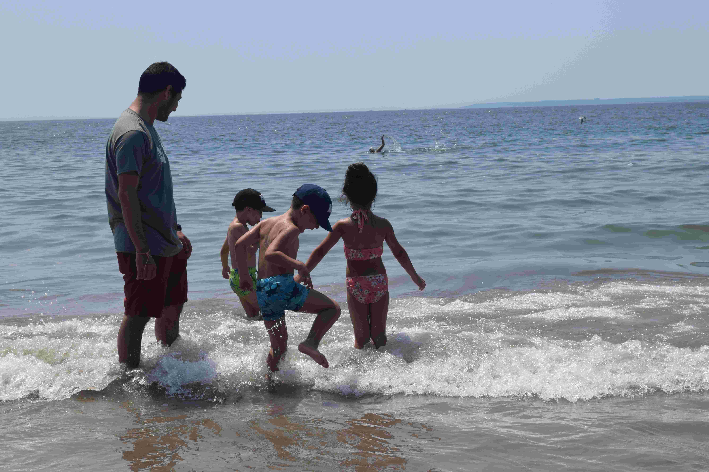

July 21, 2019
In the sixth article of the blog series - RISE, Agrim Bari an
undergraduate student in the Department of Electrical
Engineering from the Y15 batch brings to light, the
"horrifying" process of seeking a foreign internship in an
interesting manner. He did his summer internship from the New
York University. This blog is a one stop solution for anyone
wandering around seeking advice regarding a foreign research
intern.
New York University (NYU) is a private research university
originally founded in New York City but now has campuses and
locations throughout the world. As of March 2019, 37 Nobel
Laureates, 8 Turing Award winners, 5 Fields Medalists, over
30 Academy Award winners, over 30 Pulitzer Prize winners,
and hundreds of members of the National Academies of
Sciences and United States Congress have been affiliated as
faculty or alumni.

What's the best way to decide whether you should or shouldn't
go for a foreign internship? If you should, then how would you
ensure that you get to see the sun on foreign soil? Wait,
there are stipulations/prerequisites for this as well?
Unfortunately, yes! But what are these requirements: CPI?
Statement of Purpose? Cover letter? Luck? Letter(s) of
Recommendation (My mom and dad could write me one, would that
suffice?)
In the paragraphs to follow I will try to paint a picture, a
picture based on personal experiences, one that might help you
in your decision process. So, let's dive in (Wait, I don't
know swimming :P).
 'Udne ke liye bas pankh chahiye, udna toh seekh hi lenge' :
'Udne ke liye bas pankh chahiye, udna toh seekh hi lenge' :
Right from the commencement of your third year or for some,
the second year , the prospect of foreign internships would
kindle your minds. The seeds for the same, to be sown right
should be done by taking help of individuals who posted
pictures of themselves while interning abroad (But I don't use
Facebook? Huh, interesting). I began with the same late in
June itself so as to keep my horses ready when the time comes
(No, I wasn't getting ready for a fight). I got in touch with
seniors and enquired about their experiences. This, in turn,
gave me an ample of closure on whether this will suit me or
not.
'Jaan-pehchan ke baad kya karna hai?' :
Thereby I began spending time on the OIR (Office of
International Relations) website exploring the various
possible opportunities as well as making a timeline of the
deadlines of various academic interns. Though there are many
other ways to exact this, I found this method best suited to
me since the website was the only authentic source under the
name tag of IITK. Next on the list is your eligibility
criterion, duly make note of this before making way for it. In
case you aren't sure about what a specific line means, you
should mail those handling the application process in due
time. Also, if you are confused about a particular document,
it's best to probe the application handlers. Once you are
clear about the same, you can begin with your application
process.

'Itna bada kyun hai application?’:
Truth be told, you will have to prepare a lot of things
for your application. The following are always asked for:
Cover letter, Statement of Purpose/Motivation letter,
Recommendation, Resume/CV. Let's kill the ducks one by one.
First up is your cover letter; this letter introduces you,
highlights your purpose for writing, underlines a few of your
experiences or skills and appeals for a response. Next up, the
Statement of Purpose or Motivation letter; this provides you
with the opportunity to address your academic, personal, and
professional goals as well as your aspirations. It should
reference relevant examples from your background and throw
light on your character and accomplishments. Following this,
vivid accounts of your behaviour and personal qualities told
by others, play an indispensable role in their evaluation of
your application; these would be your letter(s) of
recommendation. Your letter(s) of recommendation should
provide specific examples and anecdotes that illustrate your
ability and desire to make a difference in the world. Finally,
your Resume should highlight your skills, education and
experiences in brief. Also, don't forget to add subtle
creative flair to make it stand out. The time spent on these
only come to fruition if done aptly with due diligence. Does
it end here? No, you have to now get it reviewed by seniors so
as to get it patched up (In some cases maybe everywhere, yes
it happened with me). Don't forget to do this necessary evil.
Your things might look perfect to you but essentially, what
matters is others' perspectives (Here too?).
'Ab uske baad kya karna hai? ~ Mandir ke chakkar':
Post all this, begins the long wait, almost as long as the
wait for the next season of your favourite T.V. show. In the
meanwhile, I would say, don’t be relying on just one
application, rather try your luck at various destinations.
Besides this, always keep a backup plan, it could be a company
internship, an on-campus intern etc. Appending the same, I
will now detail my foreign internship experience. The views
are personal and shouldn't be trusted blindly.
 'Hota kya hai internship pe phir? Maze aate hain?':
'Hota kya hai internship pe phir? Maze aate hain?':
The level of knowledge accumulated with all the vivid
experiences of how to present oneself in a more lucid way, was
unparalleled. One that I got to know for the first time while
working at NYU. That memory is still very clear in my mind,
the proceedings of our first meeting there. Our mentor asked
the three of us what our hobbies were and then also told us
how we could enjoy there more. It really helped us relish our
transitory stay in the New York city. I really liked the idea
of weekly presentations to keep track of our progress, and the
advice often given in such presentations. Above all, I enjoyed
the company of a couple of really motivated and passionate
people working under him who were as welcoming to help us as
he was. Besides this, I also delved into the buildings of the
following, though not restricted to this list: cultural
awareness, adaptability, improving the communication skills
and finally connecting internationally.
"Fulfilling work doesn't come from the path of least
resistance.":
Finally trying to answer the last of all the questions
on whether you should really try it or not. Actually, there is
no great mystery behind all this. If we want to do something
worthwhile, that is also a vocation, we should not passively
wait around for it to appear out of thin air. Instead, we
should take action and endeavour to grow it. How? Simply by
devoting ourselves to work that gives us deep fulfilment
through meaning, flow and freedom. … Over time, a tangible and
inspiring goal may quietly germinate, proliferate, and
eventually flower into life. Who knows maybe this could be
your calling and it sure would be worth the experience because
after all,
'Zindagi na milege dobara!'.
https://career.virginia.edu/professional-documents (For cover letter reference)
https://writing.wisc.edu/handbook/assignments/coverletters (For cover letter reference)
https://ulife.vpul.upenn.edu/careerservices/blog/2015/11/20/5-tips-for-writing-a-statement-of-purpose-for-graduate-programs (For statement of purpose)
https://ed.stanford.edu/sites/default/files/statement-of-purpose_revised_4.pdf
https://ocs.fas.harvard.edu/letters-recommendation
https://ocs.fas.harvard.edu/resumes-cvs-cover-letters